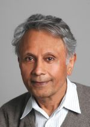

General Information
Berkeley Laboratory for Information and System Sciences is a research center in the Electrical Engineering and Computer Sciences Department at the University of California, Berkeley. The lab focuses on theoretical problems in information and data science, broadly defined. Specific research areas include communications, information and coding theory, networking, optimization, statistics, machine learning, and control.
BLISS currently comprises of 8 main faculty, 18 students and 4 postdocs. The lab is located in 264 Cory Hall.
Faculty
|
|
Venkat Anantharam
Anantharam's work studies foundational problems arising in communication networks, information theory, coding theory, game theory and stochastic control.
A focus on the distributed nature of information in networks, differing objectives of the participants, behavioral aspects, how to deal with resource constraints, security, and the role of asymptotics in taming complexity are a feature of significant parts of the work.
|
 |
Thomas Courtade
Courtade's research interests are in the area of information theory, broadly defined. In particular, his research efforts over the past few years have included topics in core Shannon theory (e.g., capacity and rate-distortion theorems), computational biology (e.g., algorithms for DNA assembly and compression of sequencing data), and he has recently been exploring connections between information measures, functional analysis and probability theory (e.g., information inequalities and statistical limit theorems).
|
 |
Jiantao Jiao
Jiao is broadly interested in statistical machine learning, mathematical data science, optimization, applied probability, information theory, and their applications in science and engineering.
|
|
|
Kannan Ramchandran
Ramchandran's research interests are broadly in the area of distributed systems theory and algorithms intersecting the fields of signal processing, communications, coding and information theory, and networking. His current systems focus is on large-scale distributed storage, large-scale collaborative video content delivery, and biological systems, with research challenges including latency, privacy and security, remote synchronization, sparse sampling, and shotgun genome sequencing.
|
|
|
Anant Sahai
Sahai’s interests are in information theory, cognitive radio and spectrum sharing, wireless protocols, control, and machine learning for collaboration and coordination.
|
|
 |
Pravin Varaiya
Varaiya's research interests include Renewable Energy and Power Systems, Transportation Systems, Control Theory, Hybrid Systems, Learning Theory, Game Theory and Mechanism Design, Communication Networks, Sensor Networks, Wireless Communication and Information Theory, Economics Theory, Urban Economics
|
|
|
Martin J. Wainwright
Wainwright is interested in a variety of problems spanning the areas of statistics, optimization, and information theory, and their applications to machine learning and statistical signal processing.
|
 |
Jean Walrand
Walrand's research interests include stochastic processes, queuing theory, communication networks, game theory, machine learning applied to stochastic scheduling, and the economics of the Internet.
|
Affiliated Faculty
Bob Brodersen
Laurent El Ghaoui
Dave Messerschmitt
Borivoje Nikolic
Abhay Parekh
Jan Rabaey
Gireeja Ranade
Shankar Sastry
Ion Stoica
David Tse
Avideh Zakhor
Assistant
Kim Kail
253 Cory Hall
kimkail@berkeley.edu
|